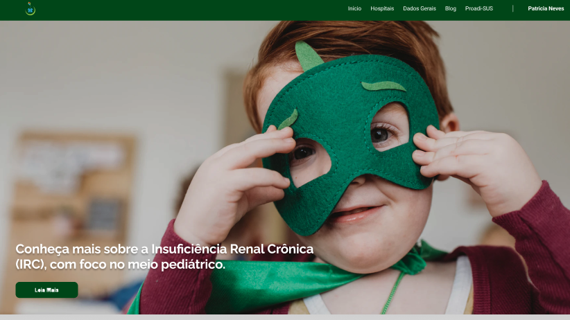
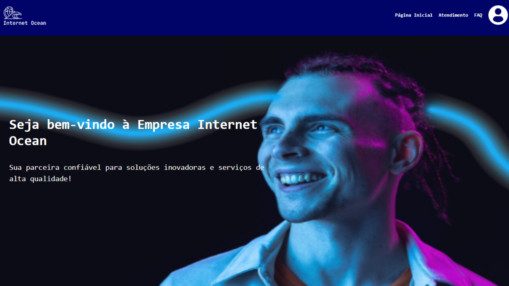
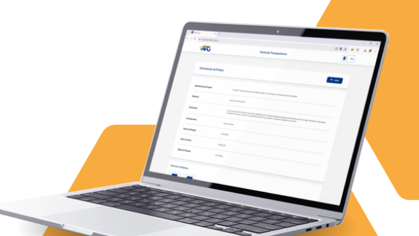
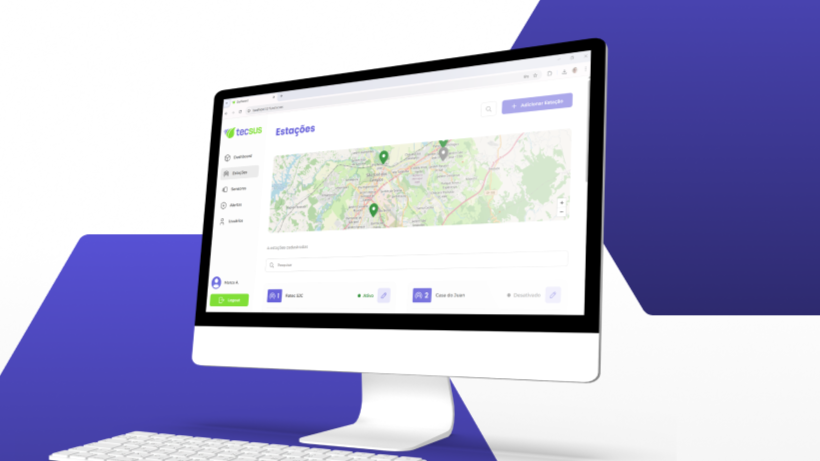
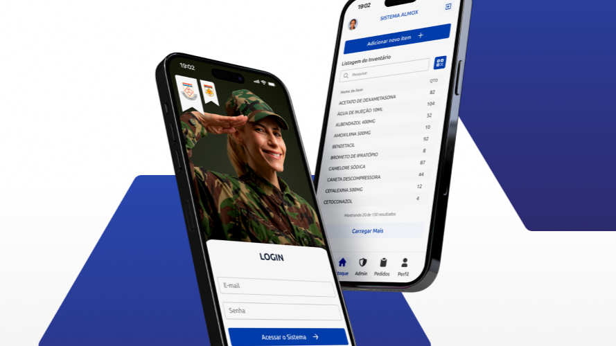
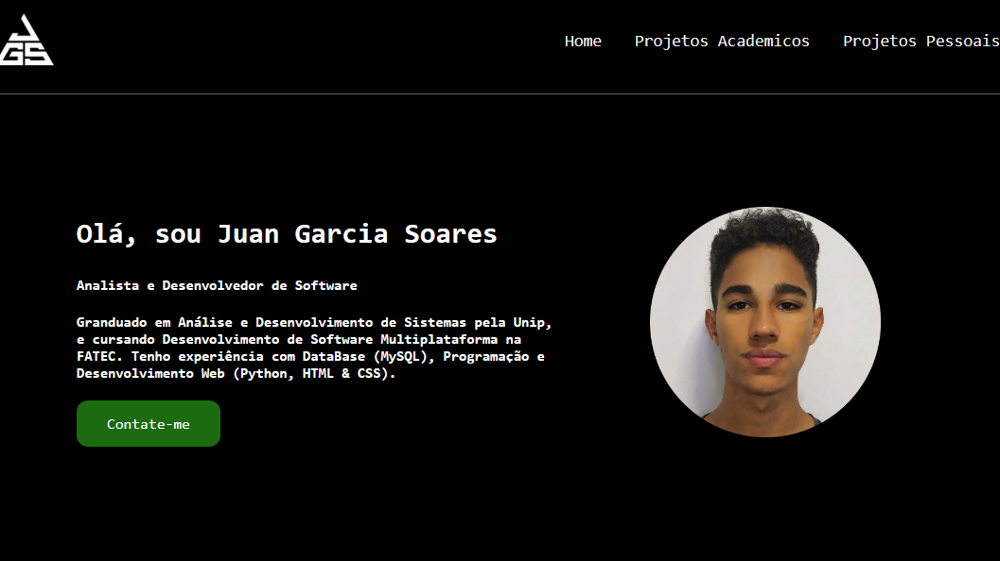
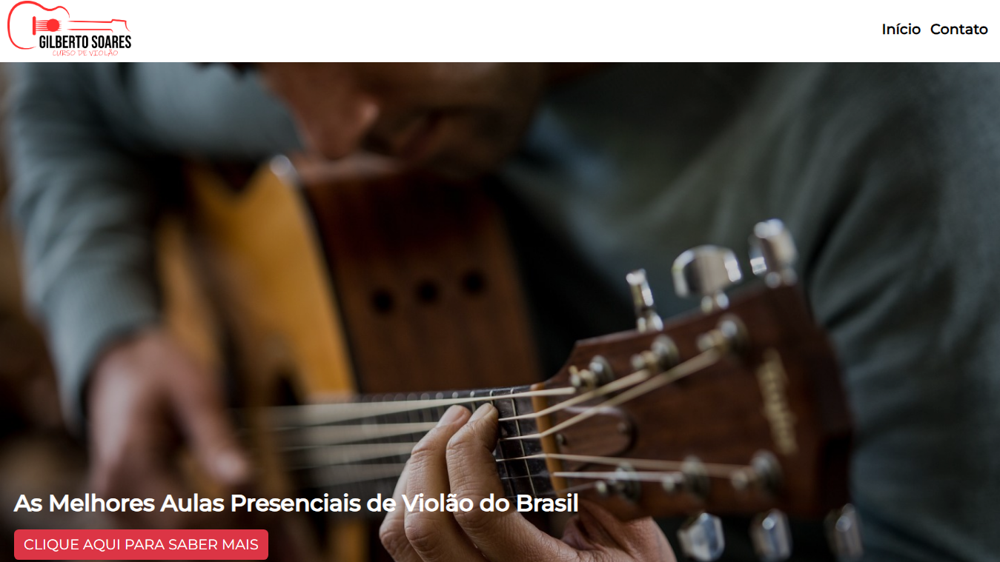

Projetos Acadêmicos

2023-2
1º API | Rim do Amor
Clique para ver detalhes →

2024-1
2º API | Internet Ocean
Clique para ver detalhes →

2024-2
3º API | Portal Transparencia FAPG
Clique para ver detalhes →

2025-1
4º API | Sistema IoT de Monitoramento Meteorológico
Clique para ver detalhes →

2025-2
5º API | Aplicativo militar de controle logístico setorial de ativos
Clique para ver detalhes →
Projetos Pessoais

Portfólio Pessoal
O Portfólio desenvolvido contém uma coleção de trabalhos, projetos e realizações da minha pessoa. Tem o intuito principal de destacar e apresentar de forma abrangente meu conjunto de habilidades, experiências e competências.
Foram utilizadas as Tecnologias: HTML & CSS, Python, Flask e Git.
Link do Repositório no GitHub

Curso de Violão
Este projeto foi feito com o intuito de compartilhar o curso de violão do meu pai. O site contém informações sobre o curso e o professor do mesmo, visualização do endereço pelo Google Maps e uma funcionalidade de enviar um e-mail automaticamente para o professor do curso através do próprio site.
Foram utilizadas as Tecnologias: HTML & CSS, Python, Flask e Git.
Link do Repositório no GitHub
×